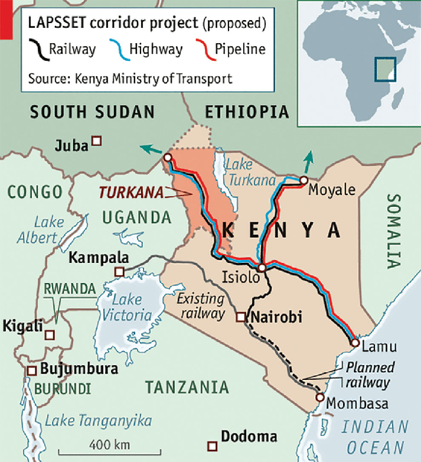

Standard Gauge Railway (SGR)
A multi-billion-dollar railway project connecting major cities, improving trade, and boosting the economy.

LAPSSET Corridor
Linking Kenya to Ethiopia and South Sudan through roads, railways, and pipelines.
Rural Electrification
Providing electricity to rural areas, improving living standards, and supporting economic activities.
COVID-19 Relief Fund
Financial aid for Kenya’s healthcare system during the pandemic, supporting hospitals and vaccination programs.
Nairobi Expressway
A major road project reducing traffic congestion and improving transportation efficiency.

Agriculture & Food Security
Funding for sustainable agriculture and food security programs to support farmers and reduce hunger.